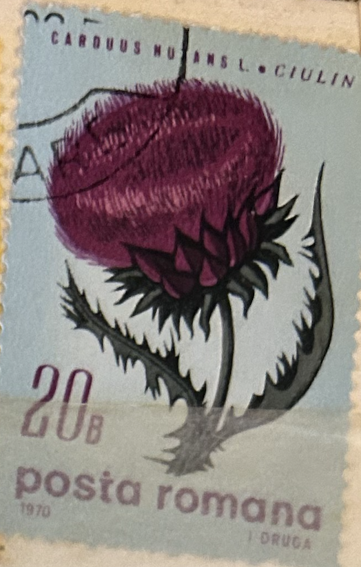
| SOURCE | TITLE| IMAGE MATCH | click to source page |
| allnumis.com | 20 Bani - Musk thistle (Carduos Nuntans), 1970 - Romania - Stamp - 26699 | 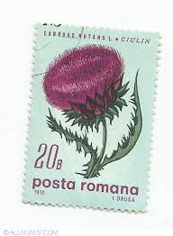 |
| eBay | Romania STAMPS 1970 FLOWERS ERROR USED POST MOVED PRINT | eBay | 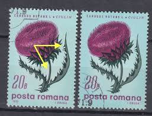 |
| WordPress.com | Friday colour: the colour purple | DailyInkling.com | 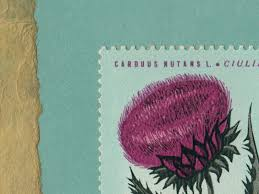 |
| Todocolección | 116677 mnh rumania 1959 5 centenario de bucares - Buy Antique stamps of Romania on todocoleccion | 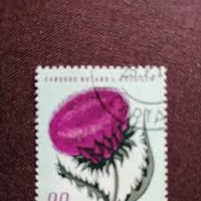 |
| eBay | Flowers Used Romanian Stamps for sale | eBay | 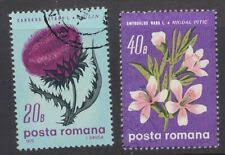 |
| eBay | Plants Uzbekistani Stamps for sale | eBay | 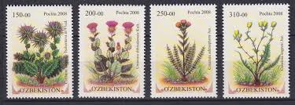 |
| eBay | EBS Czechoslovakia 1964 - Wildflowers - Michel 1471-1476 MNH* | eBay | 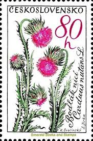 |
| eBay | c1933 Boy Scout Collector Card - British Patrol Signs & Emblems: THISTLE | eBay | 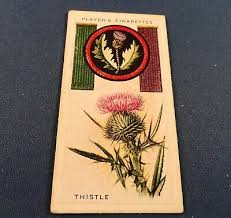 |
| Alamy | CZECHOSLOVAKIA - CIRCA 1964: a stamp printed in the Czechoslovakia shows Boxing, Summer Olympic sports, Tokyo 64, circa 1964 Stock Photo - Alamy | 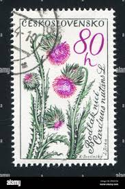 |
| Etsy | Vintage Set of Three Royale Lustertone Playing Cards - Etsy | 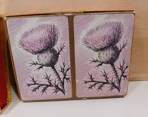 |
| HipStamp | Uzbekistan Flowers Cousinia Daisy Family 4v 2008 MNH SG#635-638 | Europe - Uzbekistan, Stamp / HipStamp | 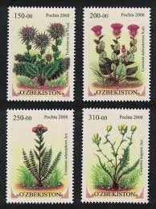 |
| Tunisia Stamps | Stamp N°1379 | 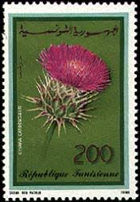 |
| eBay UK | Arms/Crests Original Collectable Player's Cigarette Cards for sale | eBay UK | 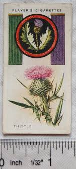 |
| Chairish | Framed Vintage Botanical Prints Set of 3 - Authentic Czech 1938 Prints | Chairish | 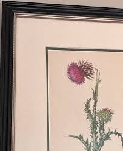 |
| eBay | Players Cigarette 1933 Boy Scout & Girl Guide Card #46 Thistle | eBay | 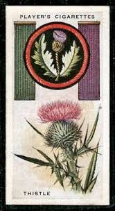 |
| CollectorBazar | Unknown Country Old Matchbox Label Flower Plant | 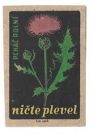 |
| eBay | Antique Postcard 1909 GOLDFINCH Chas K Reed "Bird Guide" Worcester Massachusetts | eBay | 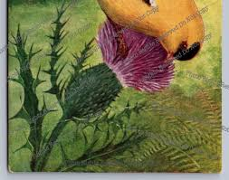 |
| filatelia.md | Wild flowers | SE ”Posta Moldovei”. Philately. | 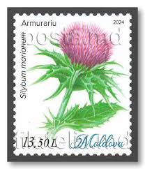 |
| Easter Rising 1916 Art | 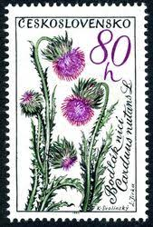 | |
| WordPress.com | P. Kor – Israeli postage stamps בולי דואר ישראליים | 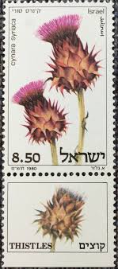 |
| Sellos de valor variable | 2024 ATM issues & variable rate stamps – Variable value stamps – ATMs | 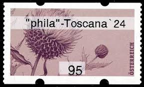 |
| eBay | 68p Denomination British Regional Stamp Issues for sale | eBay | 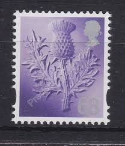 |
| eBay | E202 Arm & Hammer Soda Church Co purple thistle flower bumble bee insert card 48 | eBay | 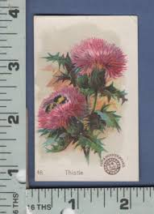 |
| eBay | San Marino #654-660 Flowers and Views FDC 1967 First Day Cover Nature Plants | eBay | 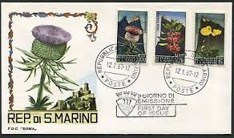 |
| eBay | ALGERIA 963 - Medicinal Plants "Silybum marainaum" (pb45418) | eBay | 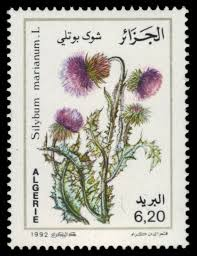 |
| eBay.de | Irak 1998 **/MNH Mi.1584 IMPERFORATED PAIR, Blumen Flowers Distel [sz0032] | eBay.de | 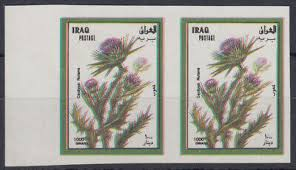 |
| Wikimedia.org | Cousinia butkovii - Wikispecies | 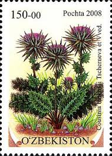 |
| Embroidery Designs | Scotland Stamp Embroidery Design | EmbroideryDesigns.com | 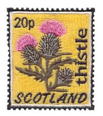 |
| lastdodo.com | Nicte Plevel - pchac - Nicte Plevel - LastDodo | 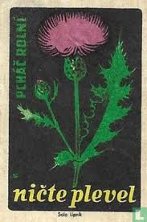 |
| Freepik | There is a sticker of a thistle flower with a stem generative ai | Premium AI-generated image | 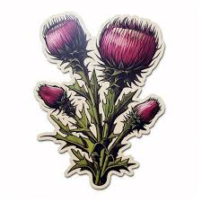 |
| Barbara Stocki (barb976) - Profile | Pinterest | 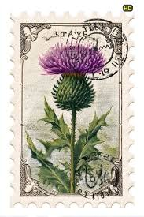 | |
| Tattoo ideas? : r/sleepnomore | 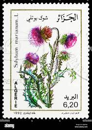 | |
| adriana-antiqueprints.com | Antique chromo lithograph of the Nodding Thistle, 1879 | adriana-antiqueprints.com | 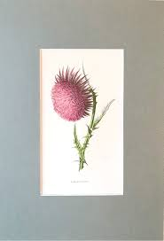 |
| Thistle - - #thistle #buffalotattooartist #thistletattoo #wildflower #wildflowertattoo #girlswithtattoos #floraltattoo #buffalony | 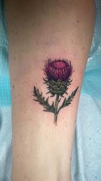 | |
| History Hoard | Books & Maps - History Hoard | 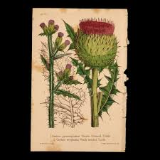 |
| carasullivan.com | Cara Sullivan | 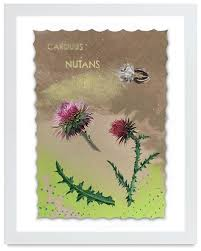 |
| eBay | Postcard Vintage (1) Scotland, Larkhall Auld Brig L'Ayr P 7/29/1909 (#511) | eBay | 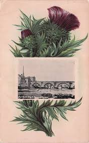 |
| Wikimedia.org | Cousinia dshisakensis - Wikispecies | 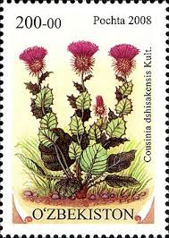 |
| eBay | Israel 1980 Thistles Flowers SG771/3 MNH UM unmounted mint | eBay | 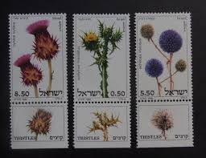 |
| Miraheze | Pabay - Stamp Encyclopedia | 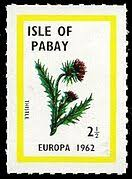 |
| Etsy | Thistle, Antique Plant Print From 1897, Medicinal Plant, Original Lithograph, Wild Plant, Botanical Illustration, Medicinal Herb - Etsy Canada | 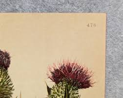 |
| Madison Traviss | Madison Traviss | 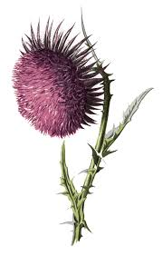 |
| eBay | 1964 Brooke Bond Tea Wild Flowers Series 3 Musk Thistle #26 NM | eBay | 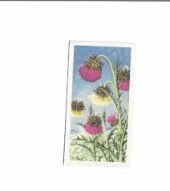 |
| eBay | FDC 1983 - CARLINE - Series 'Flora And Fauna Of France' (Ref. 8040) | eBay | 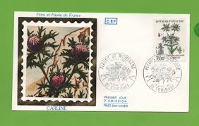 |
| Филателия България | Catalog of Bulgarian Postage Stamps for BC "5028" - "Flora - thorny plants" - four postage stamps and a special postal stamp. | 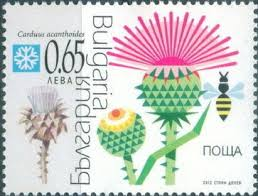 |
| Wikidata | Cirsium pumilum - Wikidata | 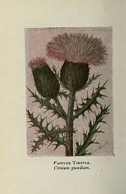 |
| Etsy | Wild Flowers Thistle Clipart Print Instant Download, Botanical Illustration for Download, Scrapbook, Paper Craft, Wedding Invitations - Etsy Denmark | 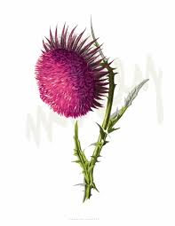 |
| Bomarka | Series of postage stamps "Rare plants" (Uzbekistan, 2008) | BOMARKA | 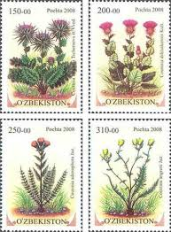 |
| Heather Dimmer (heatherdimmer) - Profile | Pinterest | 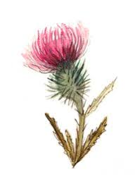 | |
| Tunisia Stamps | Philatelic Products Issue 14 (1990) | |
| Etsy | La Sylphide Ballet Bunnies Note Card Set C (4 Card With Envelope) - Etsy | |
| Wikimedia.org | File:Carduus nutans — Flora Batava — Volume v2.jpg - Wikimedia Commons | |
| Dreamstime.com | 303 Tunisia Circa Stock Photos - Free & Royalty-Free Stock Photos from Dreamstime | |
| norphil.co.uk | Norvic Philatelics Blog: Royal Mail Produce Carnival of Post and Go Errors for Scottish Congress at Perth | |
| Etsy | Scottish Thistle Art Print, Textured Watercolor Botanical Illustration - Etsy Ireland | |
| eBay | Scottish Thistle Flower - A5 High Quality 312gsm Blank Greetings Cards | eBay | |
| CollectorBazar | Iraq 1998 Scott# 1546 1000d Flowers used | |
| eBay | Gorgeous 8" X 8" Ceramic Tile Cork Base Trivet Pot Stand Thistle Flower | eBay | |
| eBay | Natual History Bernard Quaritch LTD Catalogue 1020 | eBay |
{kind=link}